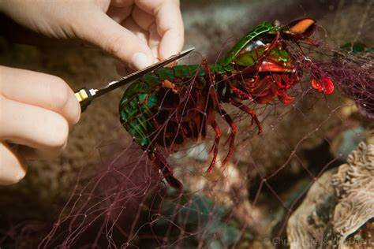
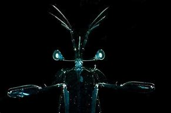
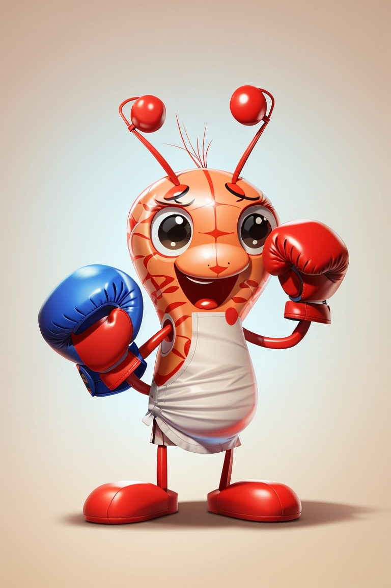
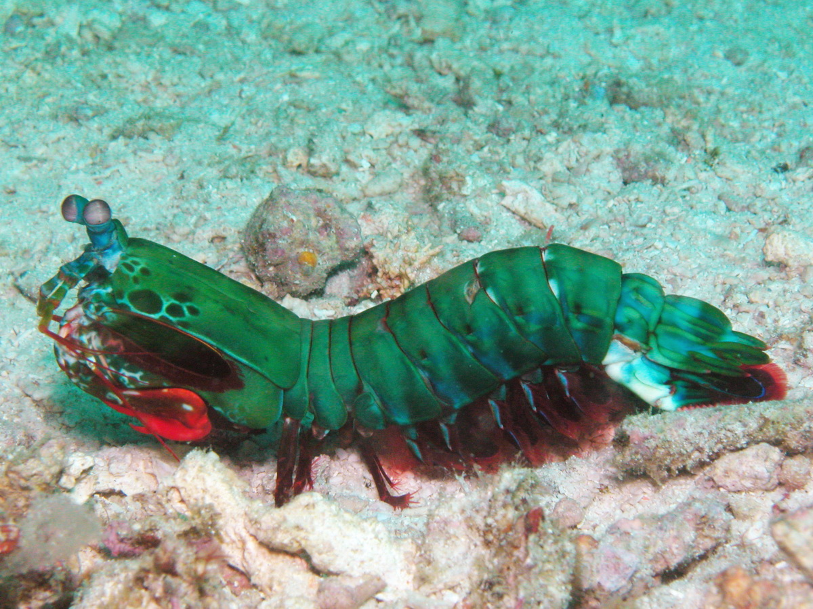
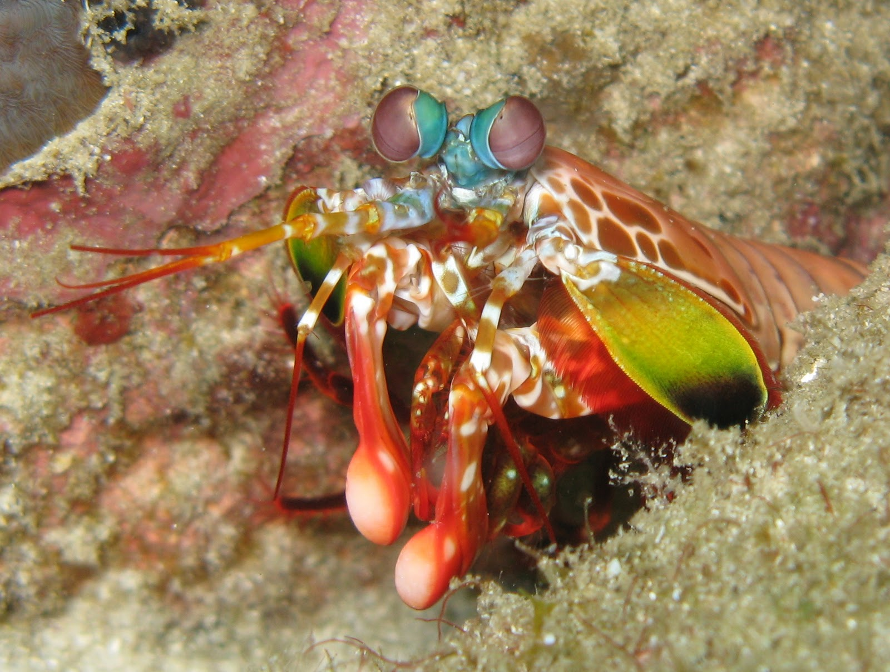
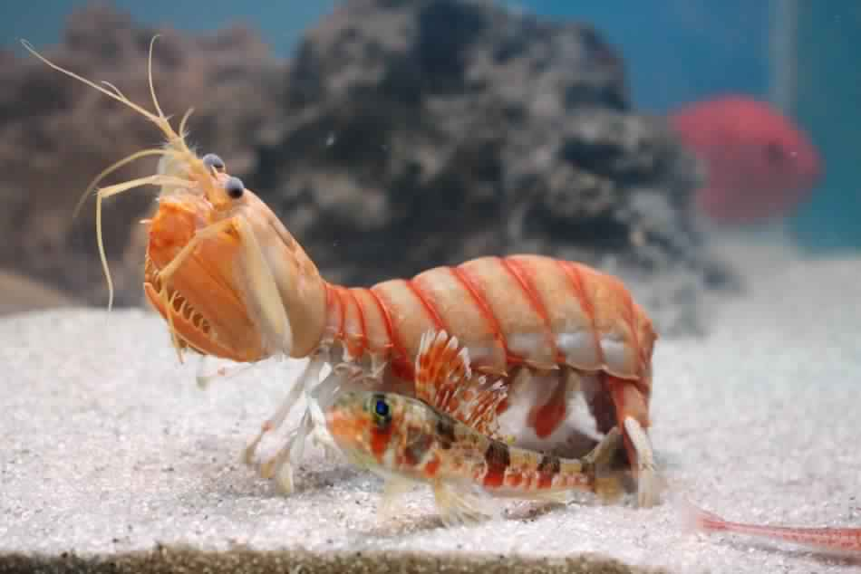
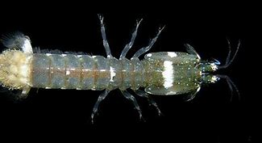
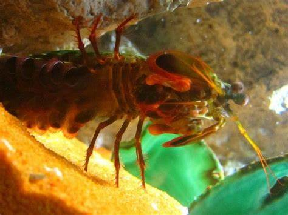

Fatos sobre o Stomatopoda
1 - Possuem uma visão incrível
2 - Possuem um soco poderoso
3 - São exclusivamente carnívoros
4 - O segundo par de patas é muito desenvolvido.
5 - Aparência e Armadilhas Mortais
6 - Variedade de Espécies
7 - Bioluminescência
Conheça mais sobre Odontodactylus scyllarus
Reino: Animalia
Filo: Arthropoda
Subfilo: Crustacea
Class: Malacostraca
Subclass: Hoplocarida
1-uma visão incrível
possuem olhos complexos e móveis que lhes proporcionam uma visão excepcional, incluindo profundidade e cores.
2-Possuem um soco poderoso
possuem garras em forma de presas capazes de realizar movimentos rápidos e poderosos para capturar e subjugar presas.
3-São exclusivamente carnívoros
são predadores que se alimentam apenas de carne, caçando uma variedade de presas marinhas.
4-O segundo par de patas é muito desenvolvido.
O segundo par de patas, chamado de "garras assassinas", é altamente especializado para caçar e capturar presas.
5-Aparência e Armadilhas Mortais
Stomatopoda têm uma aparência exótica e suas garras poderosas servem como armadilhas mortais para esmagar, cortar ou perfurar suas presas.
6-Variedade de Espécies
Existem mais de 400 espécies diferentes de camarões-mantis, adaptadas a diferentes habitats e profundidades oceânicas.
7-Bioluminescência
Algumas espécies de camarões-mantis são capazes de emitir luz bioluminescente, possivelmente usada para atrair presas ou se comunicar.